data(cabgkul, package = "TemporalHazard")
str(cabgkul)'data.frame': 5880 obs. of 2 variables:
$ int_dead: num 201.83 195.06 7.13 126.36 187.57 ...
$ dead : int 0 0 1 1 0 0 1 1 0 1 ...TemporalHazard (Ehrlinger 2026) is the team’s R port of the SAS/C HAZARD module that Blackstone and colleagues wrote for cardiac-surgery outcomes research. It does two jobs. The first is the nonparametric pair you already know from the survival chapter: Kaplan-Meier survival and the Nelson-Aalen cumulative hazard, both built on the survival package (Therneau 2026). The second is the part that makes the package worth its own chapter: a parametric multi-phase hazard fit, the classic early/constant/late decomposition of risk over time.
A Kaplan-Meier curve answers “how many are still event-free at time t.” A hazard curve answers a different and often more clinically interesting question: “how dangerous is right now.” After a cardiac operation that instantaneous risk is rarely flat. It spikes in the first weeks (the surgical insult, the early failures), settles into a long low plateau, then climbs again years later as the cohort ages. Reach for a parametric hazard model when you want to see those phases as a smooth curve rather than the noisy step function a raw event count gives you, and when you want each phase summarised by a parameter you can report and compare across cohorts.
The other reason to reach for this package is lineage. For decades the team described risk with the SAS-HAZARD module, and reviewers in this field expect that early-peak, constant-phase, late-rise vocabulary. TemporalHazard keeps the same decomposition in R, so a figure you build here reads the way the reviewers already think. You fit the model once with hazard(), then ask it for survival, cumulative hazard, or the instantaneous hazard over whatever time grid you like.
Everything in this chapter runs on data bundled with the package, so the recipe works before you point it at your own extract. For the survival and hazard sections we use cabgkul: 5,880 patients with a follow-up time int_dead (interval to death, in years) and an event indicator dead (1 = death, 0 = censored). That is the same long format the survival chapter used, one row per patient with a time and a 0/1 event. The competing-risks section switches to omc, which records thromboembolic events and death on the same patients.
data(cabgkul, package = "TemporalHazard")
str(cabgkul)'data.frame': 5880 obs. of 2 variables:
$ int_dead: num 201.83 195.06 7.13 126.36 187.57 ...
$ dead : int 0 0 1 1 0 0 1 1 0 1 ...Before fitting anything parametric, look at the empirical curves. They are the yardstick every parametric fit is later checked against, and they make no distributional assumption. hzr_kaplan() returns a data frame (class hzr_kaplan) with one row per event time and the columns you need to draw a product-limit curve: time, n_risk, n_event, survival, the logit-transformed band cl_lower/cl_upper, and the derived cumhaz, hazard, density, and life.
km <- hzr_kaplan(cabgkul$int_dead, cabgkul$dead)
head(km)Kaplan-Meier estimate with logit confidence limits
Events: 69 | Time points: 6
Survival range: 0.9883 to 0.9934
RMST at last event: 0.1957
time n_risk n_event n_censor survival std_err cl_lower cl_upper cumhaz
0.03285 5880 39 0 0.9934 0.0011 0.9909 0.9952 0.0067
0.06571 5841 9 0 0.9918 0.0012 0.9892 0.9938 0.0082
0.09856 5832 3 0 0.9913 0.0012 0.9886 0.9934 0.0087
0.13142 5829 7 0 0.9901 0.0013 0.9873 0.9924 0.0099
0.16427 5822 9 0 0.9886 0.0014 0.9855 0.9910 0.0115
0.19713 5813 2 0 0.9883 0.0014 0.9852 0.9907 0.0118
hazard density life
0.2026 0.2019 0.0328
0.0469 0.0466 0.0655
0.0157 0.0155 0.0981
0.0366 0.0362 0.1306
0.0471 0.0466 0.1632
0.0105 0.0104 0.1957ggplot(km, aes(x = time, y = survival)) +
geom_ribbon(aes(ymin = cl_lower, ymax = cl_upper), alpha = 0.2, fill = "steelblue") +
geom_step(colour = "steelblue", linewidth = 0.7) +
labs(x = "Years since operation", y = "Survival probability",
title = "Kaplan-Meier survival (cabgkul)") +
theme_hv_manuscript()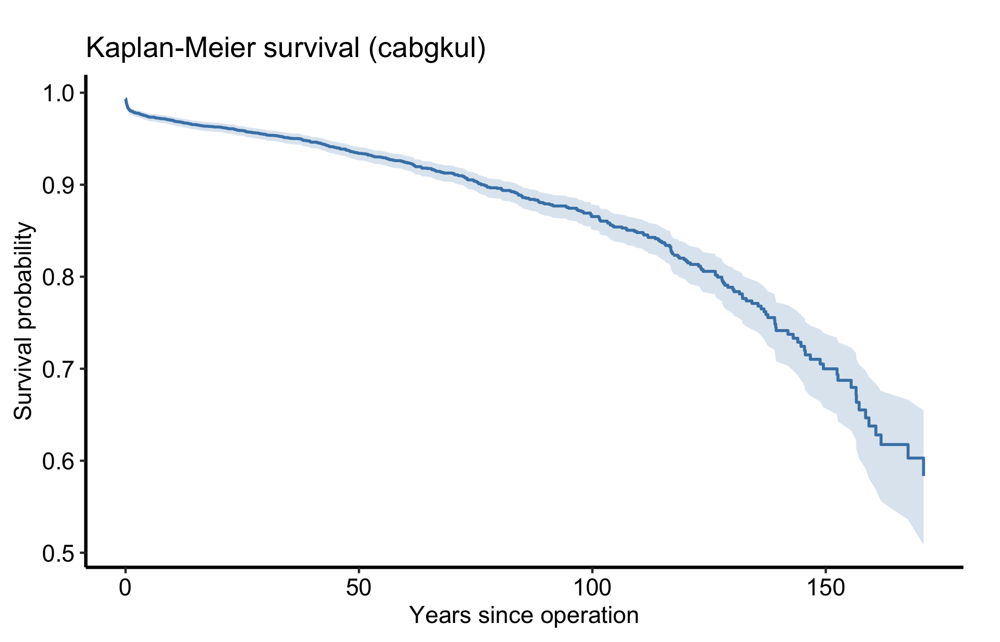
hzr_nelson() gives the Nelson-Aalen cumulative hazard (class hzr_nelson): time, n_risk, n_event, weight_sum, cumhaz with its lognormal limits cl_lower/cl_upper, hazard, and a running cum_events. The cumulative hazard is the same information as the survival curve turned the other way up; its slope at any point is the instantaneous hazard, which is what the parametric fit below will try to summarise.
na <- hzr_nelson(cabgkul$int_dead, cabgkul$dead)
head(na)Nelson cumulative hazard estimate with lognormal CL
Events: 69 | Time points: 6
time n_risk n_event weight_sum cumhaz std_err cl_lower cl_upper hazard
0.03285 5880 39 39 0.0066 2e-04 0.0063 0.0070 0.2019
0.06571 5841 9 9 0.0082 2e-04 0.0077 0.0087 0.0469
0.09856 5832 3 3 0.0087 3e-04 0.0081 0.0093 0.0157
0.13142 5829 7 7 0.0099 3e-04 0.0092 0.0106 0.0365
0.16427 5822 9 9 0.0114 4e-04 0.0107 0.0122 0.0471
0.19713 5813 2 2 0.0118 4e-04 0.0110 0.0126 0.0105
cum_events
39
48
51
58
67
69ggplot(na, aes(x = time, y = cumhaz)) +
geom_ribbon(aes(ymin = cl_lower, ymax = cl_upper), alpha = 0.2, fill = "firebrick") +
geom_step(colour = "firebrick", linewidth = 0.7) +
labs(x = "Years since operation", y = "Cumulative hazard",
title = "Nelson-Aalen cumulative hazard (cabgkul)") +
theme_hv_manuscript()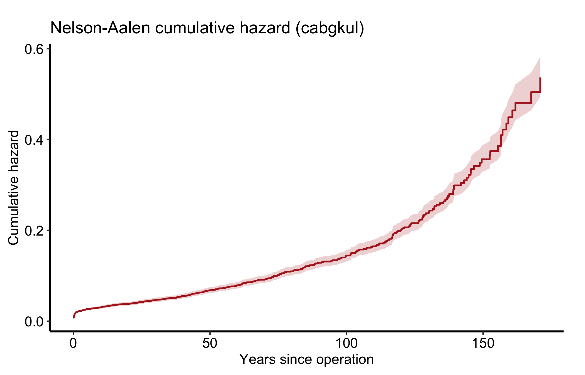
hazard() fits the parametric model when you pass fit = TRUE. The one argument you must not skip is theta, the starting values for the parameter vector. The optimiser needs somewhere to begin, and there is no safe default it can guess for you, so leaving theta out makes the fit (and every later predict()) error. For a Weibull the two parameters are the scale mu and the shape nu; theta = c(0.01, 1.0) is a reasonable start for both. The returned object (class hazard) is a list with call, spec, data, fit, legacy_args, and engine; the fitted parameters live in fit$fit$theta.
fit <- hazard(time = cabgkul$int_dead, status = cabgkul$dead,
theta = c(0.01, 1.0), dist = "weibull", fit = TRUE)
summary(fit)hazard model summary
observations: 5880
predictors: 0
dist: weibull
engine: native-r-m2
converged: TRUE
log-lik: -3935.72
evaluations: fn=37, gr=9
Coefficients:
estimate std_error z_stat p_value
mu 0.0003613699 6.016407e-05 6.006407 1.896792e-09
nu 0.5944429760 2.346410e-02 25.334149 1.343733e-141predict.hazard() evaluates the fitted model over any time grid you hand it in newdata. For type = "survival" and type = "cumulative_hazard" it returns a plain numeric vector lined up with the time column. The instantaneous hazard takes one extra step. This model is intercept-only, so type = "hazard" returns the constant relative hazard exp(eta) = 1 rather than the curve we want; the honest way to recover the instantaneous rate is to difference the cumulative hazard, since the hazard is by definition its slope.
t_grid <- seq(0.5, max(cabgkul$int_dead), length.out = 120)
nd <- data.frame(time = t_grid)
pred <- data.frame(
time = t_grid,
survival = predict(fit, newdata = nd, type = "survival"),
cumhaz = predict(fit, newdata = nd, type = "cumulative_hazard")
)
# Instantaneous hazard = d(cumhaz)/dt
pred$hazard <- c(NA, diff(pred$cumhaz) / diff(pred$time))
str(pred)'data.frame': 120 obs. of 4 variables:
$ time : num 0.5 2.19 3.88 5.58 7.27 ...
$ survival: num 0.994 0.986 0.98 0.975 0.971 ...
$ cumhaz : num 0.00596 0.01434 0.02015 0.02498 0.02924 ...
$ hazard : num NA 0.00495 0.00343 0.00286 0.00252 ...The fitted model gives us a smooth survival curve, its cumulative hazard, and the instantaneous hazard rate, one panel each.
ggplot(pred, aes(x = time, y = survival)) +
geom_line(colour = "steelblue", linewidth = 0.8) +
labs(x = "Years since operation", y = "Survival probability",
title = "Parametric (Weibull) survival") +
theme_hv_manuscript()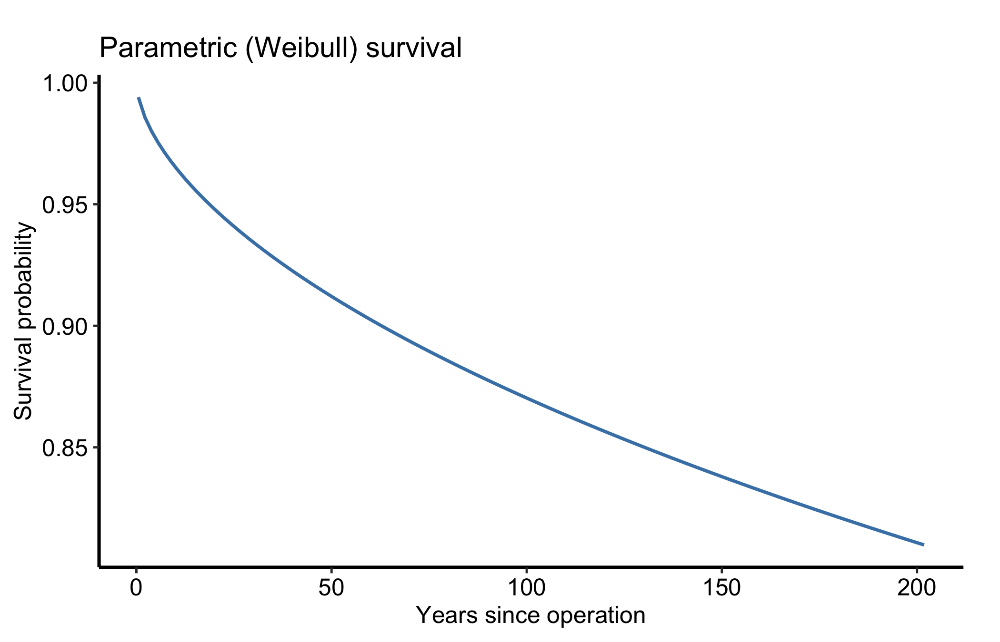
ggplot(pred, aes(x = time, y = cumhaz)) +
geom_line(colour = "firebrick", linewidth = 0.8) +
labs(x = "Years since operation", y = "Cumulative hazard",
title = "Parametric (Weibull) cumulative hazard") +
theme_hv_manuscript()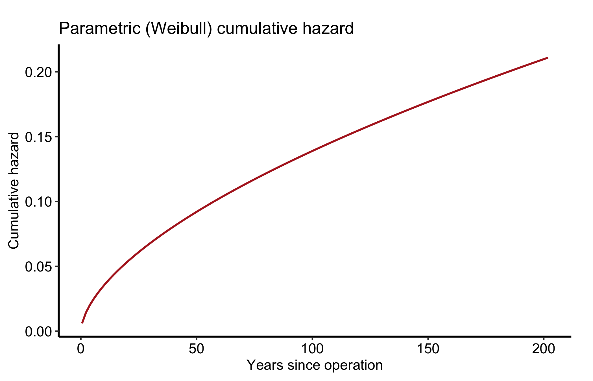
ggplot(subset(pred, !is.na(hazard)), aes(x = time, y = hazard)) +
geom_line(colour = "darkgreen", linewidth = 0.8) +
labs(x = "Years since operation", y = "Instantaneous hazard rate",
title = "Parametric (Weibull) hazard rate") +
theme_hv_manuscript()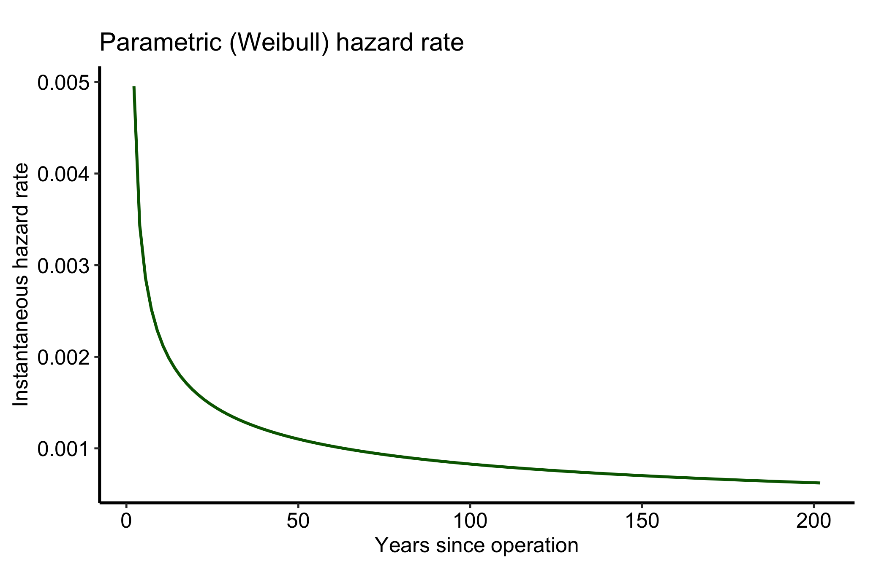
A parametric fit is only worth showing once you have checked it against the empirical curve it is meant to summarise. So overlay them: the observed Kaplan-Meier (or Nelson-Aalen) estimate is the yardstick, the parametric Weibull is the smooth model laid over it. Two series on one panel means a legend, and we place it inside the panel in the empty corner so it names the curves without covering them.
p_th_surv <- ggplot() +
geom_ribbon(data = km,
aes(x = time, ymin = cl_lower, ymax = cl_upper),
alpha = 0.2, fill = "grey40") +
geom_step(data = km,
aes(x = time, y = survival, colour = "Observed (Kaplan-Meier)"),
linewidth = 0.7) +
geom_line(data = pred,
aes(x = time, y = survival, colour = "Parametric (Weibull)"),
linewidth = 0.9) +
scale_colour_manual(
name = NULL,
values = c("Observed (Kaplan-Meier)" = "grey40",
"Parametric (Weibull)" = "steelblue")
) +
labs(x = "Years since operation", y = "Survival probability") +
theme_hv_manuscript()
# Survival falls left-to-right, leaving the lower-left empty; pin the key there
# with prefer = "bottomleft" (it still auto-dodges if that corner fills).
hv_legend_inside(p_th_surv, prefer = "bottomleft") +
theme(legend.background = element_rect(fill = "white", colour = "grey80",
linewidth = 0.3))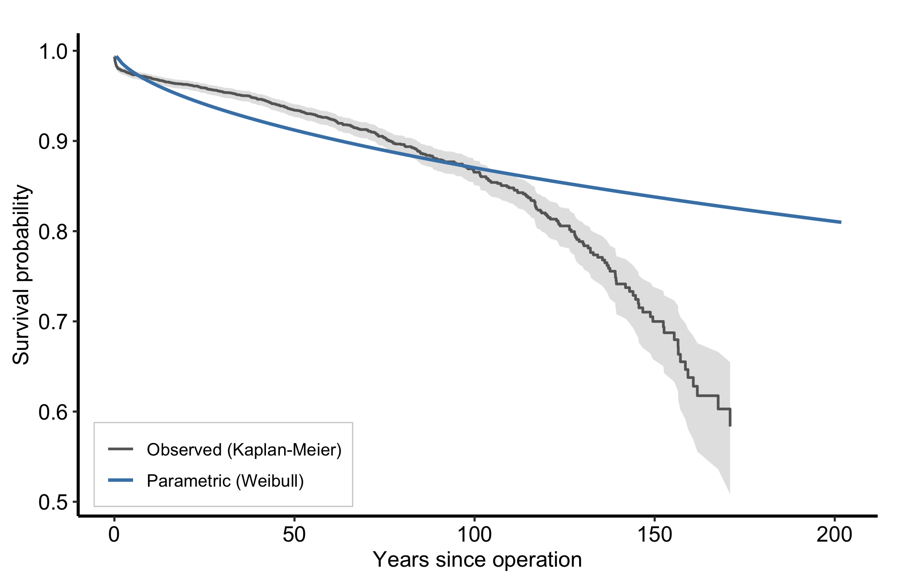
Read the overlay as a fit check: where the smooth Weibull tracks the step function, the parametric form is describing the data; where the observed Kaplan-Meier curve and its grey confidence band pull away from the Weibull line, the single Weibull shape is the wrong summary and a multi-phase fit is the next move. (The band is the observed estimate’s; this parametric predict() returns a point curve with no interval.) The same overlay works for cumulative hazard, with the Nelson-Aalen estimate as the observed series.
p_th_cumhaz <- ggplot() +
geom_step(data = na,
aes(x = time, y = cumhaz, colour = "Observed (Nelson-Aalen)"),
linewidth = 0.7) +
geom_line(data = pred,
aes(x = time, y = cumhaz, colour = "Parametric (Weibull)"),
linewidth = 0.9) +
scale_colour_manual(
name = NULL,
values = c("Observed (Nelson-Aalen)" = "grey40",
"Parametric (Weibull)" = "firebrick")
) +
labs(x = "Years since operation", y = "Cumulative hazard") +
theme_hv_manuscript()
# Cumulative hazard rises left-to-right, leaving the upper-left empty.
hv_legend_inside(p_th_cumhaz) +
theme(legend.background = element_rect(fill = "white", colour = "grey80",
linewidth = 0.3))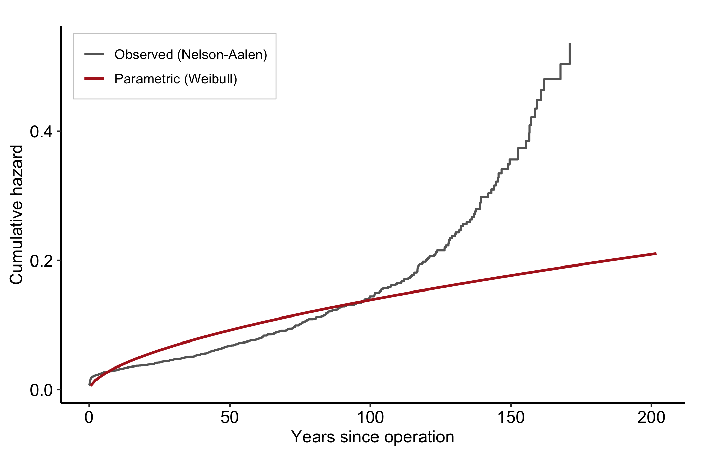
A survival figure should carry its denominators. The empirical curve here is a plain data frame, with no $tables$risk to draw on, so we hand hv_atrisk() the subject-level data directly — the time and status columns — and compose the table under the curve, aligned to its ticks.
curve_km <- ggplot(km, aes(x = time, y = survival)) +
geom_ribbon(aes(ymin = cl_lower, ymax = cl_upper),
alpha = 0.2, fill = "steelblue") +
geom_step(colour = "steelblue", linewidth = 0.7) +
labs(x = "Years since operation", y = "Survival probability") +
theme_hv_manuscript()
hv_atrisk_compose(
curve_km,
hv_atrisk(cabgkul, time = "int_dead", status = "dead")
)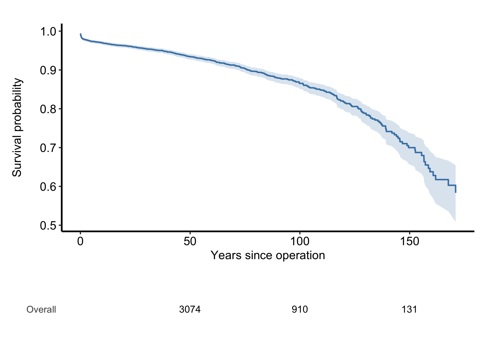
For an hv_survival() object the at-risk table comes for free from $tables$risk (see the survival chapter); for a curve built from raw columns like this one, the subject-level path rebuilds it.
A hazard curve is read by its shape, phase by phase. The Weibull above is the simplest case: its shape parameter nu < 1 produces a hazard that starts high and falls monotonically, which is exactly the early-risk story of post-operative mortality. Risk is greatest in the first months and then eases.
In the fuller multi-phase model the curve has three readable regions. An early phase is the steep descent right after the operation, the perioperative risk working itself out. A constant phase is the long flat middle, the background rate of a stable cohort; a horizontal hazard there means risk is no longer related to how long ago the surgery was. A late phase is an upturn years out, typically the cohort aging or a prosthesis wearing. When you describe a figure like this to a reviewer, name the phases: “an early peak that resolves by year one, a flat interval, and a late rise after year ten.” That is the language the SAS-HAZARD lineage trained everyone to expect. Read the cumulative hazard differently: it only ever rises, and it is its slope, not its height, that carries the hazard. A flattening cumulative-hazard curve means low current risk even though the total keeps climbing.
Death is not the only thing that can happen, and once a patient dies they can no longer have a thromboembolic event. Treating one outcome as plain censoring for the other overstates incidence; the cumulative incidence function is the honest summary. hzr_competing_risks() takes an integer-coded event vector (0 = censored, 1, 2, ... = competing event types) and returns a data frame (class hzr_competing_risks) with time, n_risk, per-type n_event_k, n_censor, the event-free surv, per-type cumulative incidence incid_k, and standard errors.
The omc dataset records thromboembolic events (te1, te2, te3) and death (dead). We collapse them into a two-cause outcome: type 1 is any thromboembolic event, type 2 is death.
data(omc, package = "TemporalHazard")
event <- with(omc, ifelse(te1 == 1 | te2 == 1 | te3 == 1, 1L,
ifelse(dead == 1, 2L, 0L)))
table(event)event
0 1 2
257 33 49 cr <- hzr_competing_risks(omc$int_dead, event)
head(cr)Competing risks cumulative incidence
Event types: 2 | Time points: 6
Final survival: 0.982
Final incid_1 : 0.0059
Final incid_2 : 0.012
time n_risk n_event_1 n_event_2 n_censor surv incid_1 incid_2 se_surv
0.06571 339 1 0 0 0.9971 0.0029 0.000 0.0029
6.93238 334 0 1 0 0.9941 0.0029 0.003 0.0042
8.37800 333 0 1 0 0.9911 0.0029 0.006 0.0051
8.87082 331 1 0 0 0.9881 0.0059 0.006 0.0059
16.85456 326 0 1 0 0.9851 0.0059 0.009 0.0066
16.98598 325 0 1 0 0.9820 0.0059 0.012 0.0073
se_1 se_2
0.0029 0.0000
0.0029 0.0030
0.0029 0.0042
0.0042 0.0042
0.0042 0.0052
0.0042 0.0060Reshape the two incidence columns to long form and plot both curves together. Read them as a pair: the two cumulative incidence curves climb toward a shared ceiling, and the gap between them is the relative burden of each cause.
cif <- data.frame(
time = rep(cr$time, 2),
incidence = c(cr$incid_1, cr$incid_2),
cause = factor(rep(c("Thromboembolic", "Death"), each = nrow(cr)))
)
ggplot(cif, aes(x = time, y = incidence, colour = cause)) +
geom_step(linewidth = 0.7) +
labs(x = "Years since operation", y = "Cumulative incidence",
colour = "Cause", title = "Competing-risks cumulative incidence (omc)") +
theme_hv_manuscript()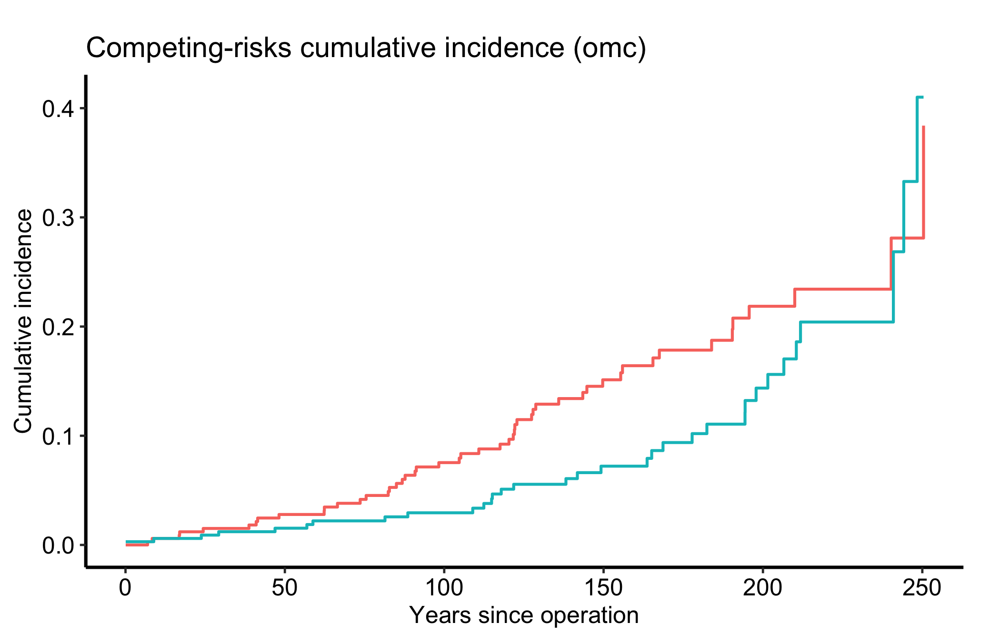
A parametric fit is only worth reporting if it tracks the data. hzr_gof() compares the fitted model against the Kaplan-Meier estimate. Call it on the fit with no extra arguments: it populates the observed and expected event counts on its own default grid (the observed event times), and handing it a custom grid leaves those columns empty. The returned columns are time, n_risk, n_event, n_censor, km_surv, km_cumhaz, par_surv, par_cumhaz, cum_observed, and cum_expected, plus a residual (expected minus observed); a "summary" attribute carries the scalar conservation diagnostics.
gof <- hzr_gof(fit)
attr(gof, "summary")$total_observed
[1] 545
$total_expected
[1] 544.97
$final_residual
[1] -0.03001163
$dist
[1] "weibull"
$n
[1] 5880head(gof)Goodness-of-fit: observed vs. expected events
Distribution: weibull | n = 5880
Total observed events: 545
Total expected events: 544.97
Final residual (E - O): -0.03
Conservation ratio (E/O): 1
Use plot columns: time, km_surv, par_surv, cum_observed, cum_expected, residualOverlaying the parametric survival on the Kaplan-Meier survival is the quickest visual check. Where the two curves sit on top of each other the Weibull is faithful; where they peel apart it is missing structure in the data.
gof_long <- data.frame(
time = rep(gof$time, 2),
survival = c(gof$km_surv, gof$par_surv),
model = factor(rep(c("Kaplan-Meier", "Parametric"), each = nrow(gof)))
)
ggplot(gof_long, aes(x = time, y = survival, colour = model)) +
geom_line(linewidth = 0.6) +
labs(x = "Years since operation", y = "Survival probability",
colour = NULL, title = "Goodness of fit: observed vs. parametric") +
theme_hv_manuscript()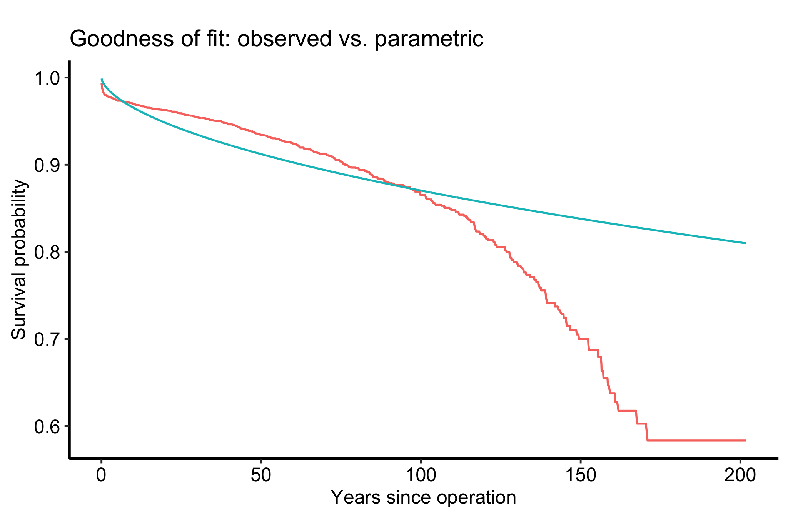
The cumulative observed-versus-expected curve is the survival analogue of a calibration plot. When the two lines stay together (a conservation ratio near 1) the model is reproducing the actual event count over time, not just the shape of the curve.
oe <- data.frame(
time = rep(gof$time, 2),
events = c(gof$cum_observed, gof$cum_expected),
kind = factor(rep(c("Observed", "Expected"), each = nrow(gof)))
)
ggplot(oe, aes(x = time, y = events, colour = kind)) +
geom_line(linewidth = 0.6) +
labs(x = "Years since operation", y = "Cumulative events",
colour = NULL, title = "Cumulative observed vs. expected events") +
theme_hv_manuscript()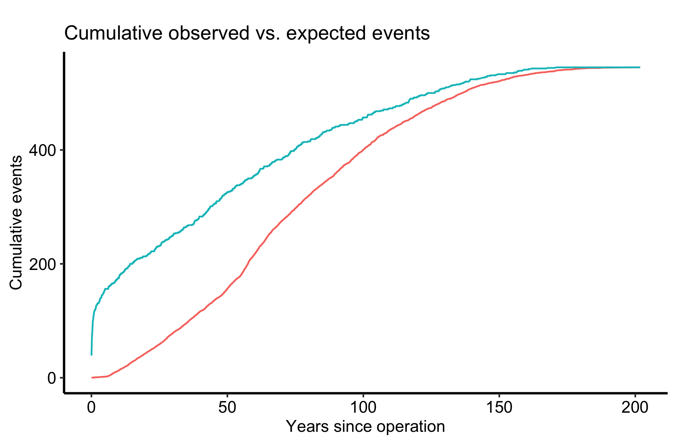
Finally, hzr_calibrate() bins a continuous covariate into quantile groups and reports the observed event probability per bin, returning group, n, events, mean, min, max, prob, and link_value (the event probability on the chosen link scale). Here we calibrate against follow-up time itself as a worked example; against a real risk score the same plot tells you whether predicted and observed risk agree across the range.
cal <- hzr_calibrate(cabgkul$int_dead, cabgkul$dead, groups = 10)
calVariable calibration (logit link, 10 groups)
group n events mean min max prob link_value
1 588 178 5.459 0.033 10.251 0.303 -0.834
2 588 33 14.284 10.251 18.629 0.056 -2.822
3 588 35 23.803 18.694 28.682 0.060 -2.760
4 588 37 34.431 28.682 40.083 0.063 -2.701
5 588 49 46.693 40.182 52.404 0.083 -2.398
6 588 29 57.231 52.404 61.504 0.049 -2.959
7 588 37 67.096 61.537 73.726 0.063 -2.701
8 588 44 82.006 73.726 91.107 0.075 -2.515
9 588 37 101.465 91.107 114.171 0.063 -2.701
10 588 66 136.711 114.171 201.828 0.112 -2.068ggplot(cal, aes(x = mean, y = prob)) +
geom_point(size = 2, colour = "steelblue") +
geom_line(colour = "steelblue") +
labs(x = "Mean follow-up time in bin (years)", y = "Observed event probability",
title = "Calibration across follow-up-time deciles") +
theme_hv_manuscript()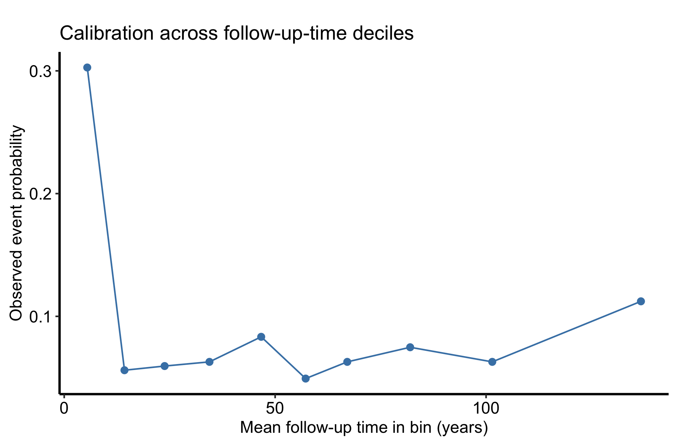
hazard() needs starting values. Pass theta explicitly, for example theta = c(0.01, 1). Without it the optimiser has no starting point and the fit (and every predict() that follows) errors out. This is the single most common reason a TemporalHazard script fails on first run.predict(type = "hazard") returns the constant relative hazard, not the curve you want. Derive the instantaneous rate by differencing the cumulative hazard, as in the predict chunk above; the hazard is its slope.hzr_gof() choose its own grid. It fills the observed and expected event counts only on its default event-time grid. Hand it a custom grid and cum_observed/cum_expected come back empty, and the calibration plots have nothing to draw. Call hzr_gof(fit) with no grid argument.